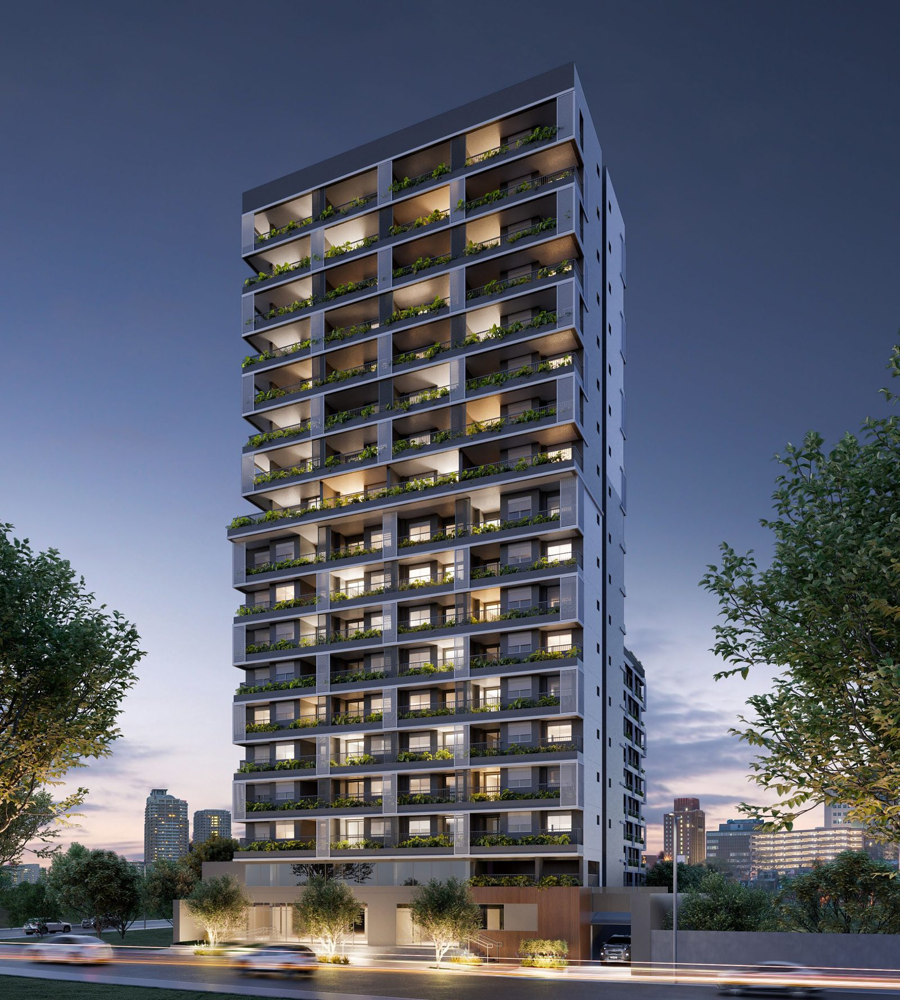
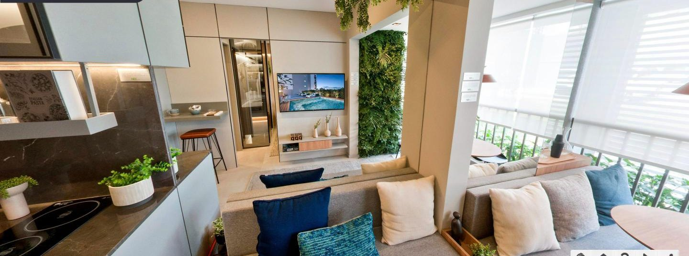
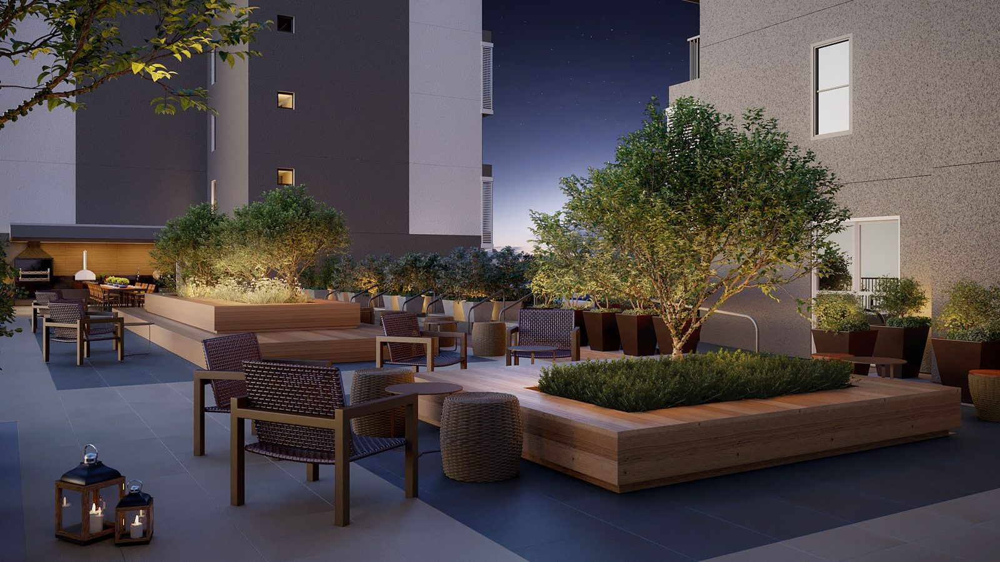
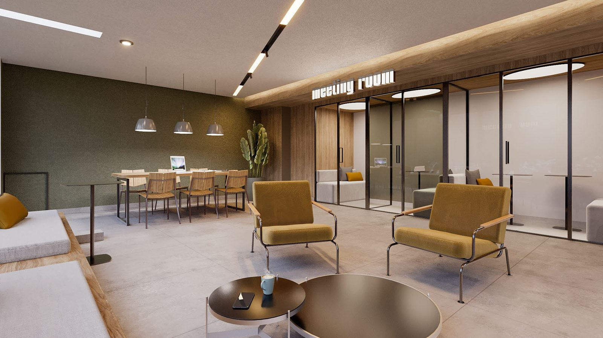
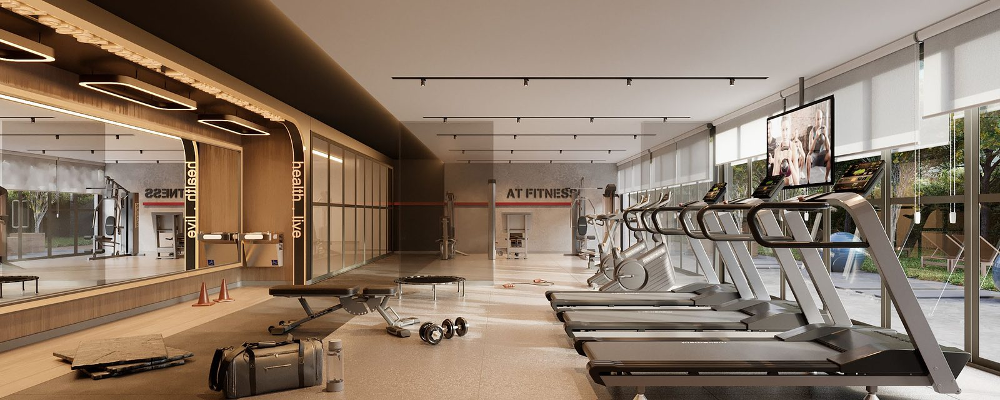

Moema · Al. Jurupis 1817 · 400 m do metrô Eucaliptos
É um repasse de contrato da unidade 1707, studio de 25,71 m² no 17º andar, o último pavimento da Torre Jurupis. O prédio está pronto e vendido: das 300 unidades da torre, 286 já saíram, e as 10 que a One ainda tem são todas HMP, com limite de renda e restrição de locação por dez anos. Esta não é.
Quero ver a condição completaRespondo no WhatsApp em até 15 minutos, das 8h às 22h. Mando o contrato e o extrato do saldo pra você conferir antes de visitar.

Torre Jurupis, imagem oficial da One Innovation. A 1707 fica no 17º, o último pavimento.
Tour 360° oficial
A One publicou o tour em 360° da planta de um dormitório. Dá pra andar pela sala, pela cozinha e sair no terraço, girando a imagem com o dedo. Leva dois minutos e responde mais que qualquer foto.

Abrir o tour 360°Sala, cozinha, banho e terraço. Material oficial da One Innovation.O tour mostra a planta de um dormitório do empreendimento, decorada e mobiliada para exposição. A 1707 é a planta final 07, studio de 25,71 m² com terraço coberto, no 17º e último pavimento. Serve para você sentir o pé direito, os acabamentos e a proporção dos ambientes.



Todas as imagens desta página são as oficiais da One Innovation, do material do empreendimento, e mostram o prédio e as áreas comuns. Não são fotos da unidade 1707: assim que as chaves saírem, as fotos reais entram aqui.
Eu te mando o contrato original e o extrato atualizado do saldo devedor. Você vê exatamente quanto já foi pago, quanto falta e qual a taxa de transferência da One. Nada fica escondido pra depois.
Repasse é cessão de direitos, e a incorporadora precisa aprovar o novo comprador. É o mesmo processo de análise de quem compra direto no plantão. Com documentação em ordem, leva de 30 a 60 dias entre a proposta e a assinatura.
Assinatura feita na One, com o proprietário e com corretor registrado acompanhando. A unidade já está pronta, então não existe risco de atraso de obra.
O saldo é corrigido pela construtora até a data da assinatura, e é conferido junto com você no extrato oficial antes de qualquer proposta. Bancos financiam até 80% do valor do imóvel, então quem opta por financiamento cobre em recursos próprios a diferença entre esse limite e o saldo. A One também trabalha com financiamento direto e aceita pagamento à vista.
Quem fala com você no WhatsApp sou eu, Pedro Poli, da Technopoli. Eu cuido da divulgação dessa unidade: sou quem organiza os documentos, responde suas perguntas e agenda a visita.
A negociação e a assinatura da cessão são feitas com o proprietário e com corretor registrado no CRECI. Eu não intermedeio a venda, e digo isso abertamente porque você tem o direito de saber com quem está falando em cada etapa.
Na prática isso é bom pra você: eu tenho tempo pra responder rápido, mandar o documento que você pedir e tirar dúvida no mesmo dia, porque essa é a única unidade que eu estou cuidando.
O proprietário comprou essa unidade na planta e está transferindo o contrato dele pra você antes de receber as chaves. Isso se chama cessão de direitos, é previsto no contrato e acontece todos os dias no mercado.
Na prática você entra no lugar dele: assume o saldo devedor e passa a ser o comprador perante a One, que precisa autorizar a transferência.
Você assume o saldo que ainda falta pagar do apartamento, do mesmo jeito que assumiria comprando direto no plantão. A diferença é que parte do valor já foi paga pelo proprietário, e é justamente por isso que o seu desembolso inicial é menor.
Nada disso é feito na confiança: o extrato oficial da One mostra o saldo exato, e ele vai pra sua mão antes de qualquer assinatura.
Não pra conversar, mas sim pra fechar. A One analisa o crédito de quem assume o contrato, e quem chega com crédito pré-aprovado ou com capital em caixa resolve em semanas em vez de meses.
Se você ainda não tem aprovação, me fala na primeira mensagem que eu te digo exatamente quais documentos adiantar.
As 10 unidades que restam no plantão são HMP, Habitação de Mercado Popular. Por lei municipal, elas são destinadas a famílias com renda de até R$ 16.210 por mês. Quem ganha acima disso não pode comprar para morar, apenas como investimento, e nesse caso fica obrigado a alugar para inquilinos que se enquadrem no mesmo limite de renda, sem locação por temporada, por dez anos.
A 1707 é unidade de mercado livre. Sem limite de renda, sem restrição de locação e sem prazo de carência. É o mesmo prédio, o mesmo lazer e a mesma garantia da incorporadora, com liberdade de uso que as outras não têm.
Nessa metragem, não. No Nex One as vagas ficam nas unidades de um e dois dormitórios e nos studios garden. O prédio fica a 400 metros do metrô e a três minutos do Shopping Ibirapuera, e é justamente por isso que o studio compacto é procurado por quem não usa carro no dia a dia.
O vendedor. São 3% sobre o valor da operação, e essa conta não chega para você. É a razão pela qual o custo total fica em R$ 495 mil e não em R$ 510 mil.
Essa unidade não vem com ponto para máquina de lavar, e é bom você saber disso antes e não depois. Em compensação o condomínio tem lavanderia própria, que é o padrão em prédio de compacto e resolve sem ocupar metro quadrado dentro do apartamento.
O empreendimento está pronto e a entrega das chaves está em andamento. Até a chave da unidade sair, a visita é ao empreendimento e ao apartamento decorado, e eu te mando a planta e o material oficial da One antes.
Depois disso, a visita passa a ser na própria 1707, e quem já estiver em negociação tem prioridade de horário. Me chama no WhatsApp que eu te mando as opções no mesmo dia.
Entre 30 e 60 dias, e quase todo esse prazo é banco e análise de crédito, não burocracia de papel. Com documentação em ordem e crédito aprovado, fica na ponta curta desse intervalo.
Alameda dos Jurupis, 1817, Moema, São Paulo. O prédio fica no trecho entre a Avenida Ibirapuera e a Alameda dos Arapanés, na parte de Moema conhecida como Moema Índios.
A unidade fica no 17º andar, voltada para o lado do Parque e do Shopping Ibirapuera. A entrega das chaves está em andamento, e até a chave desta unidade sair a visita é ao empreendimento e ao decorado, combinada por WhatsApp inclusive no sábado.
Me chama, eu te mando o contrato e o extrato do saldo, e você decide com os números na mão. Se não fizer sentido pra você, eu mesmo vou te dizer.
É uma unidade só, e ela é de último andar.
Quero os documentos e os números